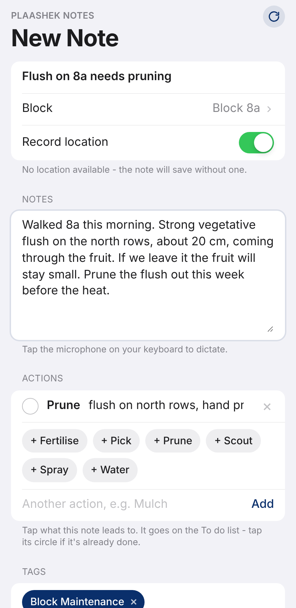
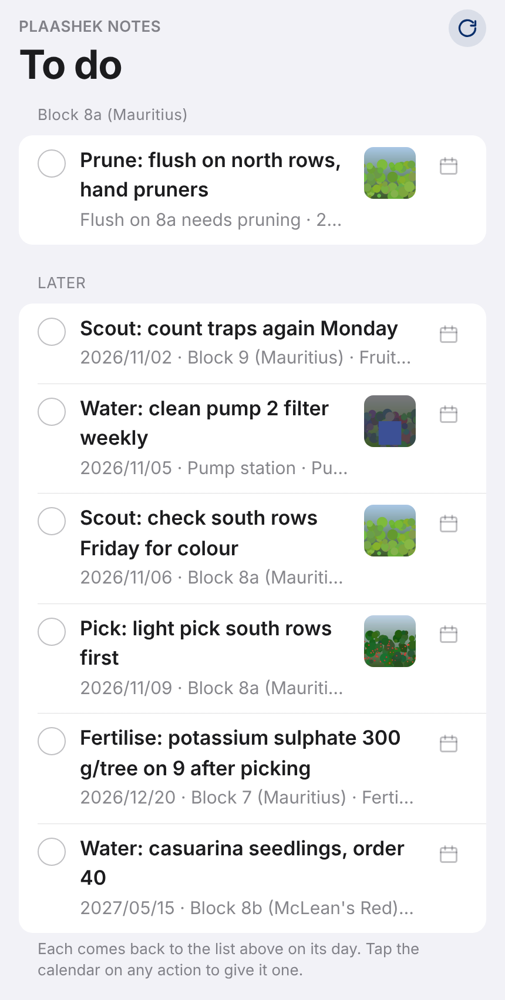
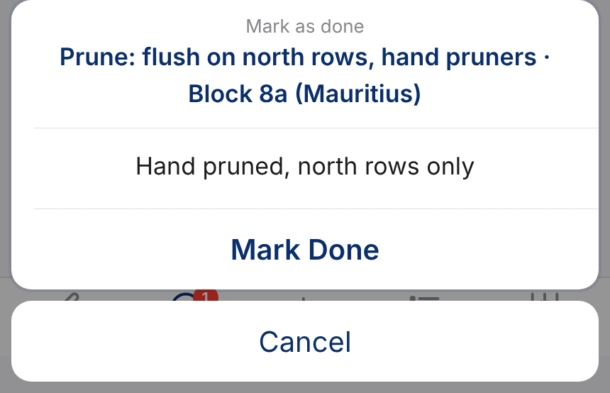
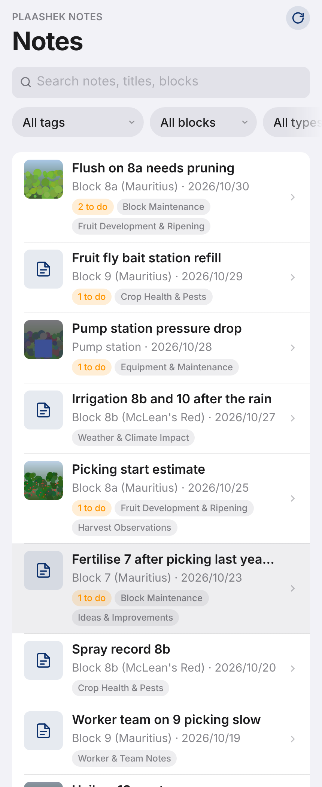
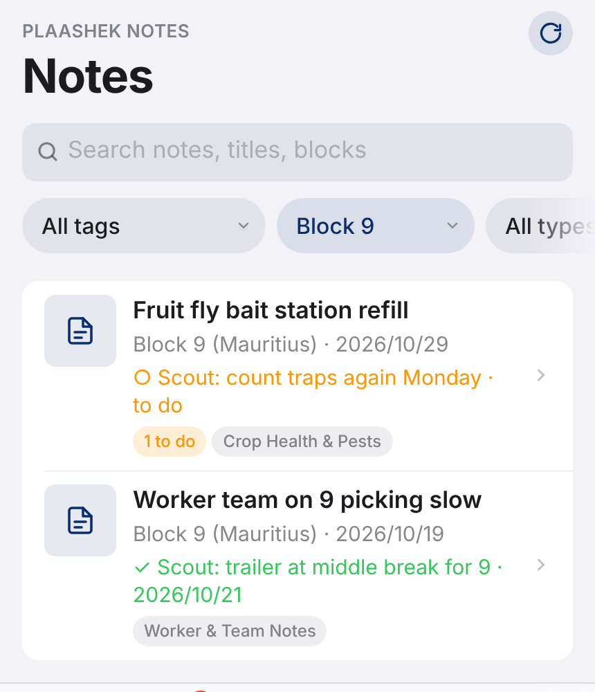
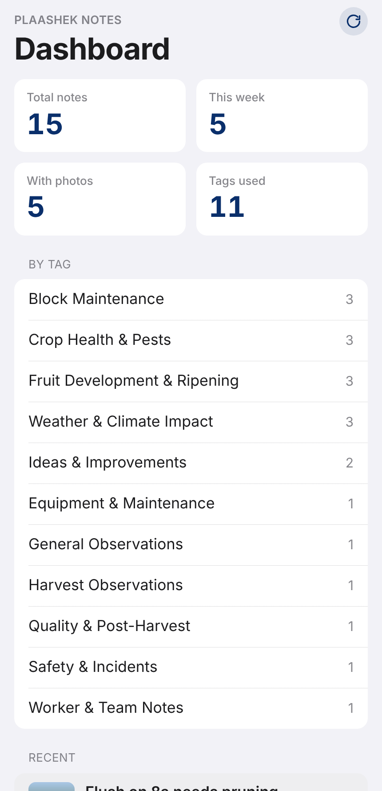
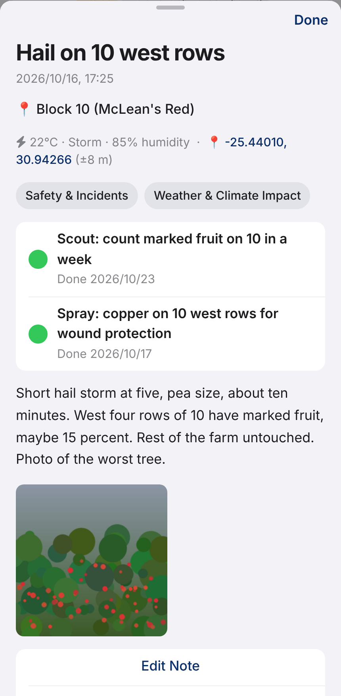
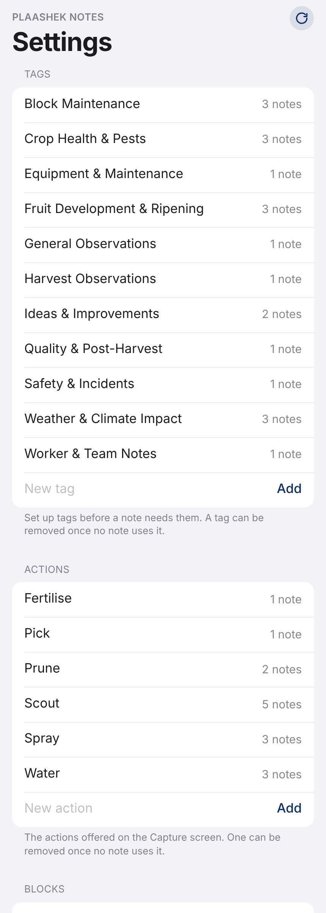

A note is a title, the block or spot, the words, the actions it leads to, tags and photos. Tap the microphone on the phone's keyboard and talk; the app stamps where you stood and what the weather was.

The To do list is the farm's work-order book. Every action still waiting, grouped by block, longest waiting first: what to do, with what, and by when. The foreman opens it on their phone, does the job, taps the circle and says what was actually used. The note then records that the block was pruned, or sprayed, on which day and with what.


Search by title, text or block, and filter by tag, block, variety or action. Choose a block and an action together and you have that block's history: every spraying of 8b, when, and with what.





| Who it is for | The owner and whoever will run the farm after them, and the staff who carry out the work orders on the To do list. A phone each, one notebook, no sign-in. |
| Hosting and data | Your farm lives at yourfarm.plaashek.co.za on a South African hosting service, encrypted in transit and at rest, backed up daily, never shared between farms. |